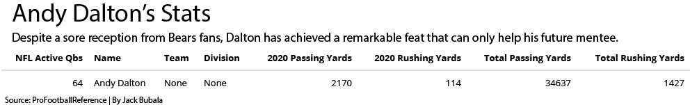

After a mediocre at best 8-8 season, the Chicago Bears let their once thought to be franchise quarterback, Mitchell Trubisky, walk and become a free agent. A move expected by many brought a wave of excitement as rumors of Russell Wilson started swirling, leading Bears fans to believe that they may finally have found their guy. Instead, Wilson is staying in Seattle and Andy Dalton is coming to Chicago after leading an above-average Cowboys team to a below-average season. In this post, we will examine if the Bears made the right decision in picking Dalton and who Ryan Pace should draft to be Dalton’s mentee.
Let’s take a look at the stats.
library(tidyverse)## ── Attaching packages ─────────────────────────────────────── tidyverse 1.3.0 ──## ✓ ggplot2 3.3.3 ✓ purrr 0.3.4
## ✓ tibble 3.0.4 ✓ dplyr 1.0.4
## ✓ tidyr 1.1.2 ✓ stringr 1.4.0
## ✓ readr 1.4.0 ✓ forcats 0.5.1## ── Conflicts ────────────────────────────────────────── tidyverse_conflicts() ──
## x dplyr::filter() masks stats::filter()
## x dplyr::lag() masks stats::lag()library(ggalt)## Registered S3 methods overwritten by 'ggalt':
## method from
## grid.draw.absoluteGrob ggplot2
## grobHeight.absoluteGrob ggplot2
## grobWidth.absoluteGrob ggplot2
## grobX.absoluteGrob ggplot2
## grobY.absoluteGrob ggplot2library(ggrepel)
library(kableExtra)##
## Attaching package: 'kableExtra'## The following object is masked from 'package:dplyr':
##
## group_rowslibrary(formattable)
nflqbs <- read_csv("~/activenflqbs.csv")##
## ── Column specification ────────────────────────────────────────────────────────
## cols(
## `NFL Active Qbs` = col_double(),
## Name = col_character(),
## Team = col_character(),
## Division = col_character(),
## `2020 Passing Yards` = col_number(),
## `2020 Rushing Yards` = col_number(),
## `Total Passing Yards` = col_number(),
## `Total Rushing Yards` = col_number()
## )collegeqbs <- read_csv("~/drafteligibleqbs.csv")##
## ── Column specification ────────────────────────────────────────────────────────
## cols(
## `Draft Eligible Qbs` = col_double(),
## Name = col_character(),
## Team = col_character(),
## Conference = col_character(),
## `2020 Passing Yards` = col_double(),
## `2020 Rushing Yards` = col_double(),
## `Total Passing Yards` = col_double(),
## `Total Rushing Yards` = col_double()
## )The first thing we’re going to do is take a look at Dalton’s stats so that we can compare it to the rest of his competition and make a table out of it.
dalton <- nflqbs %>%
filter(Name=="Andy Dalton")
dalton %>% kable() %>%
kable_styling() %>%
save_kable("dalton.pdf")## Note that HTML color may not be displayed on PDF properly.## save_kable will have the best result with magick installed.
As can be seen from the table Dalton has over 30,000 career passing yards and over 1,000 career rushing yards. That is a rare feat, and in fact by filtering out all current quarterbacks who have less than 30,000 career passing yards and 1,000 career rushing yards we find that Dalton is one of only 10 active quarterbacks to have accomplished such a feat, and was one of only 3 who were free agents this offseason.
nflqbs %>% filter(`Total Rushing Yards` >= 1000, `Total Passing Yards` >= 30000) %>%
summarise(
Name,
Team,
`Total Passing Yards`,
`Total Rushing Yards`
)## # A tibble: 10 x 4
## Name Team `Total Passing Yard… `Total Rushing Yard…
## <chr> <chr> <dbl> <dbl>
## 1 Ben Roethlisber… Pittsburgh Steele… 66105 1614
## 2 Aaron Rodgers Green Bay Packers 56914 3556
## 3 Matt Ryan Atlanta Falcons 58439 1430
## 4 Tom Brady Tampa Bay Buccane… 91653 1176
## 5 Cam Newton New England Patri… 33519 5656
## 6 Andy Dalton None 34637 1427
## 7 Ryan Fitzpatrick None 34977 2621
## 8 Matthew Stafford Los Angeles Rams 46017 1223
## 9 Russell Wilson Seattle Seahawks 37732 5033
## 10 Alex Smith None 37395 2824So this puts us in a very good position for finding our next quarterback. That’s a phrase Bears fans don’t hear often but it’s important to be optimistic sometimes. We can play to two strengths here; throwing and running. First, we are going to take a look at college quarterbacks entering the draft this year that have the best arms based off passing yards both this year and throughout their college careers then turn them into two bar charts, one for overall yards and then one for just 2020.
careerpassingyards <- collegeqbs %>% filter(`Total Passing Yards` >= 10000)
ggplot(careerpassingyards, aes(x = reorder(Name, - `Total Passing Yards`), weight = `Total Passing Yards`)) +
geom_bar() +
scale_y_continuous(labels = comma) +
labs(title = "Top College Quarterbacks by Career Passing Yards",
subtitle = "Trevor Lawrence is on here but who are these guys beating him",
x = "Player", y = "Career Passing Yards",
caption = "Source: ESPN | By Jack Bubala") +
theme_minimal()
For the chart above I filtered out all current draft eligible quarterbacks with less than 10,000 career passing yards. As we can see from the chart there is one big name, Trevor Lawrence, expected by many to be the #1 overall pick, the Bears will likely not have a chance at him. That leaves us with three other names, Sam Ehlinger, Shane Buechele, and Brady White. Sam Ehlinger you might know, he’s been the quarterback at Texas the past four years and helped them beat Georgia in the Sugar Bowl to culminate the 2018 season. Now, who are Shane Buechele and Brady White? They are lesser known names likely because they went to SMU and Memphis respectively. However, as can be seen from the chart they should not be taken lightly and if I were Ryan Pace I would most certainly have my eyes on Buechele and White as well as Sam Ehlinger.
Now it’s time to take a look at stats from just 2020 and see if these 4 names we see here showed last year that they are capable of playing at the highest level during the hardest year.
currentpassingyards <- collegeqbs %>% filter(`2020 Passing Yards` >= 3000)
ggplot(currentpassingyards, aes(x = reorder(Name, - `2020 Passing Yards`), weight = `2020 Passing Yards`)) +
geom_bar() +
scale_y_continuous(labels = comma) +
labs(title = "Top College Quarterbacks by 2020 Passing Yards",
subtitle = "The SEC leads the pack but the smaller guys aren't too far behind",
x = "Player", y = "2020 Passing Yards",
caption = "Source: ESPN | By Jack Bubala") +
theme_minimal()
There’s some more familiar names for you! For the chart above I filtered out all draft elibgible quarterbacks who threw less than 3,000 yards this year. Lawrence is still on there and has been joined by fellow top-5 pick projection, Zach Wilson from BYU. Mac Jones and Kyle Trask are also on there, you might remember them from their shootout in this year’s SEC Championship game. Sam Ehlinger didn’t make the cut but we see Brady White and Shane Buechele back up here, now this is the tough part. If I were Ryan Pace, and I solely wanted to play to Dalton’s arm, I would take Trask if he’s there; a Power 5 talent with a New Year’s Six win in two appearences and an SEC East division title. However, don’t reach for him, don’t reach when there’s better talent on the board to build the team around, and most important of all, DON’T TRADE UP!! All Bears fans know how that went last time. If we can’t get Trask, I would pick Brady White. White is the much more likely option than Trask and he could go undrafted if not for a team like the Bears seeing his potential. White also has the better resume, having lead Memphis to a New Year’s Six appearance just a year ago and he seems to be a better fit for the Bears system in my opinion.
Now we will do the same thing as the last two charts except for changing passing yards to rushing yards. I will once again be making two bar charts, one for career rushing yards and one for 2020 rushing yards.
careerrushingyards <- collegeqbs %>% filter(`Total Rushing Yards` >= 1000)
ggplot(careerrushingyards, aes(x = reorder(Name, - `Total Rushing Yards`), weight = `Total Rushing Yards`)) +
geom_bar() +
scale_y_continuous(labels = comma) +
labs(title = "Top College Quarterbacks by Career Rushing Yards",
subtitle = "Sam Ehlinger leads the competition by a wide margin",
x = "Player", y = "Career Rushing Yards",
caption = "Source: ESPN | By Jack Bubala") +
theme_minimal()
For this chart I filtered out all draft eligible quarterbacks who ran for less than 1,000 yards in their career. As can be seen from the data above Sam Ehlinger leads the pack, and by a lot, nearly 300 yards over Kellen Mond, the Texas A&M quarterback. This list is rounded out with some more familiar names such as Ian Book from Notre Dame, maybe bringing him to Chicago and reuniting him with his old tight end Cole Kmet would be a good idea. Justin Fields is on here as well but will likely be gone by the time the Bears get a chance to select. There’s also Peyton Ramsey, who may sound familiar to Chicago fans but that’s likely because he played 20 miles north in Evanston this year and lead the Wildcats to a Big Ten West Division title. Then there’s Zac Thomas and Trey Lance. Lance played for North Dakota State and is being highly touted as a top player by analysts even being projected to go as high as #3, so the Bears will likely not have a shot at him either.Thomas played for Applachian State, a team who won the Sun Belt in both 2018 and 19.
Now we will see if these players show up again when we look at the rushing stats from just this year.
currentrushingyards <- collegeqbs %>% filter(`2020 Rushing Yards` >= 250)
ggplot(currentrushingyards, aes(x = reorder(Name, - `2020 Rushing Yards`), weight = `2020 Rushing Yards`)) +
geom_bar() +
scale_y_continuous(labels = comma) +
labs(title = "Top College Quarterbacks by 2020 Rushing Yards",
subtitle = "Now it's Ian Book who leads the competition by a wide margin",
x = "Player", y = "2020 Rushing Yards",
caption = "Source: ESPN | By Jack Bubala") +
theme_minimal()
For this chart above, I filtered out all draft eligible quarterbacks who rushed for less than 250 yards this year. Ian Book now leads the field and by a wide margin. Fields follows and Ehlinger comes after him who we saw leading the last chart. Thomas and Mond come next followed by Ramsey and then we see the re-appearance of Zach Wilson. Wilson is likely only on here because Lance only played one game this fall before Lance declared for the draft as North Dakota State is in the FCS. Now again the tough part, who would I pick. I think that based off running alone Sam Ehlinger would be the best pick coming just in front of Ian Book. If you’re a Notre Dame fan like myself you know that Book is not good in the big game and that will hurt him in the NFL. Ehlinger appears more draft-ready to be and played very well in the Senior Bowl making him my pick if I were drafting just based on rushing.
Now, before I compile all this data together and make my projection as to who Ryan Pace should draft to run the offense after Andy Dalton, I will first go over that initial decision, to sign Andy Dalton. As I mentioned previously there were only three free agent quarterbacks, including Dalton, who had amassed over 30,000 passing yards and over 1,000 rushing yards in their careers. I will again be creating two charts, but this time they will be bubble charts, and I will be showing where those three quarterbacks rank among current quarterbacks, who were free agents this year, who have either thrown for over 30,000 yards or rushed for over 1,000 yards respectively while also specifically highlighting the three who did both: Andy Dalton, Alex Smith, and Ryan Fitzpatrick.
fitzpatrick <- nflqbs %>% filter(Name=="Ryan Fitzpatrick")
smith <- nflqbs %>% filter(Name=="Alex Smith")
passing <- nflqbs %>% filter(`Total Passing Yards` >= 30000, `Team`=="None")
ggplot() +
geom_point(
data=passing,
aes(x=`Total Passing Yards`, y=`2020 Passing Yards`, size=`Total Passing Yards`),
color="grey",
alpha=.5) +
geom_point(
data=dalton,
aes(x=`Total Passing Yards`, y=`2020 Passing Yards`, size=`Total Passing Yards`),
color="blue") +
geom_point(
data = fitzpatrick,
aes(x=`Total Passing Yards`, y=`2020 Passing Yards`, size=`Total Passing Yards`),
color="orange") +
geom_point(
data = smith,
aes(x=`Total Passing Yards`, y=`2020 Passing Yards`, size=`Total Passing Yards`),
color="red") +
geom_vline(xintercept = 5.820543) +
geom_hline(yintercept = 5.673263) +
geom_text_repel(
data=passing,
aes(x=`Total Passing Yards`, y=`2020 Passing Yards`, label=Name)
) +
labs(title="NFL Quarterbacks by Passing Yards", subtitle="All the good quarterbacks are signed so we get what's left", caption="Source: ProFootballReference | By Jack Bubala") + theme_minimal() +
theme(
plot.title = element_text(size = 16, face = "bold"),
axis.title = element_text(size = 10),
plot.subtitle = element_text(size=12),
plot.caption = element_text(size=8),
panel.grid.minor = element_blank()
) Looks like we only had four options. The surprising part of this is likely that the largest bubble didn’t even belong to someone on our radar, Joe Flacco. Flacco’s problem however is that he isn’t much of an agile guy. Now, going back to our main three we see something troubling, Dalton has the smallest circle. Based off these stats, it doesn’t seem that Pace made the right choice, shocker. Smith appears to be the man for the job. Let’s see if that holds up through the rushing stats.
Looks like we only had four options. The surprising part of this is likely that the largest bubble didn’t even belong to someone on our radar, Joe Flacco. Flacco’s problem however is that he isn’t much of an agile guy. Now, going back to our main three we see something troubling, Dalton has the smallest circle. Based off these stats, it doesn’t seem that Pace made the right choice, shocker. Smith appears to be the man for the job. Let’s see if that holds up through the rushing stats.
rushing <- nflqbs %>% filter(`Total Rushing Yards` >= 1000, `Team`=="None")
ggplot() +
geom_point(
data=rushing,
aes(x=`Total Rushing Yards`, y=`2020 Rushing Yards`, size=`Total Rushing Yards`),
color="grey",
alpha=.5) +
geom_point(
data=dalton,
aes(x=`Total Rushing Yards`, y=`2020 Rushing Yards`, size=`Total Rushing Yards`),
color="blue") +
geom_point(
data = fitzpatrick,
aes(x=`Total Rushing Yards`, y=`2020 Rushing Yards`, size=`Total Rushing Yards`),
color="orange") +
geom_point(
data = smith,
aes(x=`Total Rushing Yards`, y=`2020 Rushing Yards`, size=`Total Rushing Yards`),
color="red") +
geom_vline(xintercept = 5.820543) +
geom_hline(yintercept = 5.673263) +
geom_text_repel(
data=rushing,
aes(x=`Total Rushing Yards`, y=`2020 Rushing Yards`, label=Name)
) +
labs(title="NFL Quarterbacks by Rushing Yards", subtitle="All the good quarterbacks are signed so we get what's left", caption="Source: ProFootballReference | By Jack Bubala") + theme_minimal() +
theme(
plot.title = element_text(size = 16, face = "bold"),
axis.title = element_text(size = 10),
plot.subtitle = element_text(size=12),
plot.caption = element_text(size=8),
panel.grid.minor = element_blank()
) Once again, Dalton’s circle is the smallest of those highlighted, bad news. While Dalton was a better choice than the other choices who can’t seem to throw; Trubisky, RG3, McCown, Taylor, Bortles, and Winston, he still pales in comparison to Fitzpatrick and Smith. Now, I will cut Pace some slack for not signing Fitzpatrick, as he was picked up by Washington while the Bears were still pursuing Wilson, I will not however forgive Pace for not signing Alex Smith. Yes, Smith is coming off a gruesome leg injury but he won Comeback Player of the Year and that is no small task. There’s one more reason as to why Smith could’ve been chosen solely based off his arm, his last mentee, Ryan Pace’s nightmare, Patrick Mahomes. If Smith was able to usher in Mahomes and help shape him into the player he is, who knows what he’d be able to do with whoever the Bears decide to draft under center. Speaking of which, let’s find out who Smith’s perfect pairing would have been.
Once again, Dalton’s circle is the smallest of those highlighted, bad news. While Dalton was a better choice than the other choices who can’t seem to throw; Trubisky, RG3, McCown, Taylor, Bortles, and Winston, he still pales in comparison to Fitzpatrick and Smith. Now, I will cut Pace some slack for not signing Fitzpatrick, as he was picked up by Washington while the Bears were still pursuing Wilson, I will not however forgive Pace for not signing Alex Smith. Yes, Smith is coming off a gruesome leg injury but he won Comeback Player of the Year and that is no small task. There’s one more reason as to why Smith could’ve been chosen solely based off his arm, his last mentee, Ryan Pace’s nightmare, Patrick Mahomes. If Smith was able to usher in Mahomes and help shape him into the player he is, who knows what he’d be able to do with whoever the Bears decide to draft under center. Speaking of which, let’s find out who Smith’s perfect pairing would have been.
For this part I will create a stacked bar chart of the draft eligible players with over 8,000 passing yards and over 500 rushing yards that I think would’ve best learned under Smith’s direction and I will pick one from there to be drafted by the Bears.
thepick <- collegeqbs %>%
filter(`Total Passing Yards` >= 8000, `Total Rushing Yards` >= 500) %>%
summarise(
Name,
Team,
`Total Passing Yards`,
`Total Rushing Yards`
)
thepickwide <- thepick %>%
pivot_longer(
cols=starts_with("Total"),
names_to="Type",
values_to="Yards")
ggplot(thepickwide, aes(x=reorder(Name, Yards), weight=Yards, fill=Type)) +
geom_bar() +
coord_flip() +
labs(
x = "Player",
y = "Total Offensive Yards",
title = "Draft Eligible Quarterbacks Total Offensive Yards",
subtitle = "Ehlinger doesn't even let it be close",
source = "ESPN"
) +
theme_minimal() +
theme(
plot.title = element_text(size = 16, face = "bold"),
plot.subtitle = element_text(size = 10),
axis.title = element_text(size = 8),
panel.grid.minor = element_blank()
) The pick is in: Sam Ehlinger. Ehlinger is not projected to go very highly in the draft making this selection even better as Pace can build a team around him, help retool the defense, and get a solid replacement for Kyle Long. The icing on the cake, Tom Herman. Herman was the football coach at the University of Texas, Ehlinger’s school, for the past 4 years all while Ehlinger was there. Herman was hired this offseason as an assistant coach by the Chicago Bears. Many analysts, including Adam Schefter, were puzzled by the move wondering what it could be. Now, it seems apparent. Herman is going to get a chance to mentor Ehlinger again, now on a much bigger stage. You thought playing for Texas was hard, just wait unti you step inside Soldier Field. Bears fans will boo their own offense with no mercy. Pace knows this, but he also has a coach on his staff who knows Sam better than anyone. That is why I believe Pace will finally make the right call and pick the guy. He can be an underdog and doubted which Pace seems to like, but he will be the guy. The stats say it and hopefully Pace will too. April 30th or May 1st, Sam Ehlinger will be drafted. Hopefully, he can keep wearing the orange he’s worn for the past four years but this time in Chicago. This is Pace’s last shot. If the Bears don’t have a glimmer of hope by the end of 2022 if not 2021, then Pace will likely be fired. He already messed up in choosing Dalton over Smith, now make it right and prove to this city and most importantly to yourself that you’re not just a guy who can draft a defense and was double-doinked out of Chicago.
The pick is in: Sam Ehlinger. Ehlinger is not projected to go very highly in the draft making this selection even better as Pace can build a team around him, help retool the defense, and get a solid replacement for Kyle Long. The icing on the cake, Tom Herman. Herman was the football coach at the University of Texas, Ehlinger’s school, for the past 4 years all while Ehlinger was there. Herman was hired this offseason as an assistant coach by the Chicago Bears. Many analysts, including Adam Schefter, were puzzled by the move wondering what it could be. Now, it seems apparent. Herman is going to get a chance to mentor Ehlinger again, now on a much bigger stage. You thought playing for Texas was hard, just wait unti you step inside Soldier Field. Bears fans will boo their own offense with no mercy. Pace knows this, but he also has a coach on his staff who knows Sam better than anyone. That is why I believe Pace will finally make the right call and pick the guy. He can be an underdog and doubted which Pace seems to like, but he will be the guy. The stats say it and hopefully Pace will too. April 30th or May 1st, Sam Ehlinger will be drafted. Hopefully, he can keep wearing the orange he’s worn for the past four years but this time in Chicago. This is Pace’s last shot. If the Bears don’t have a glimmer of hope by the end of 2022 if not 2021, then Pace will likely be fired. He already messed up in choosing Dalton over Smith, now make it right and prove to this city and most importantly to yourself that you’re not just a guy who can draft a defense and was double-doinked out of Chicago.